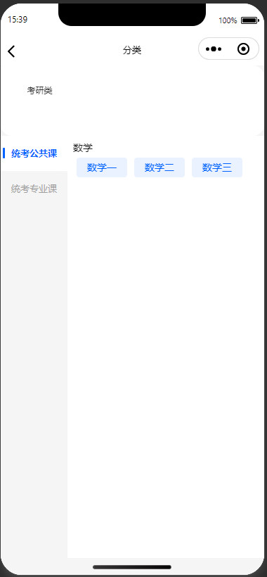
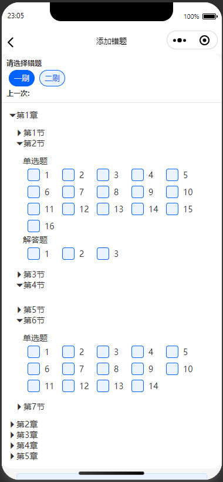
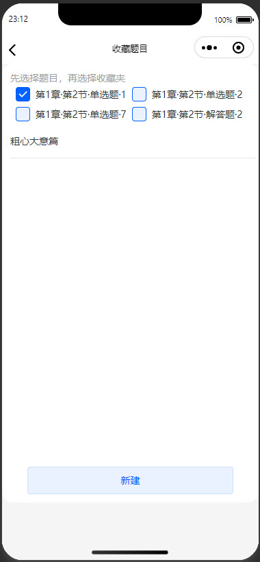
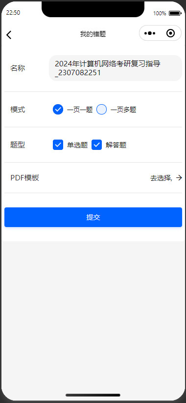
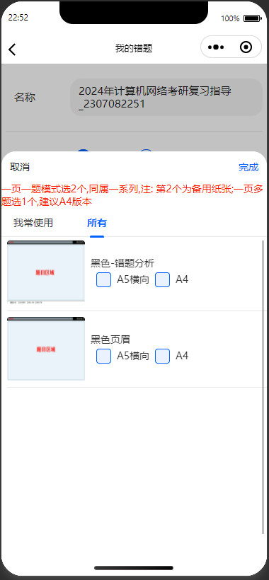
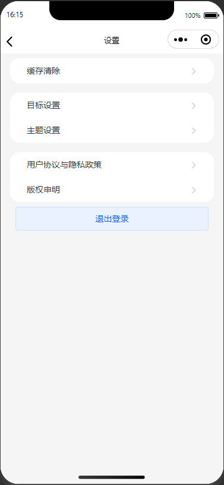
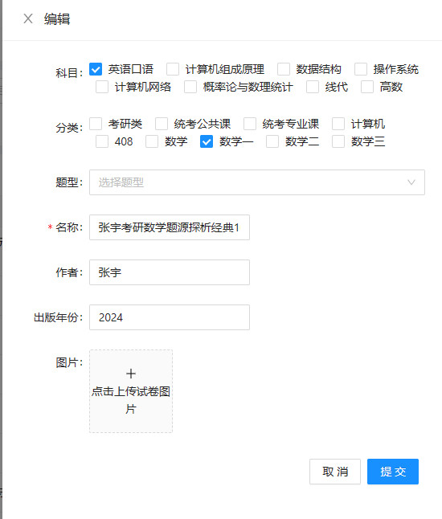

Examination Master Manage incorrect questions
# Java
# SpringBoot
# Redis
# MySQL
# MyBatis
# Uniapp
# Vue
# JavaScript
Abstract
Users can select the numbers of the questions they answered incorrectly from the WeChat Mini Program, and the system will generate a pdf containing these questions for further practice.
Video
YoutubeImages
Wechat Mini Program
1. Home
    2. Me
Administration system
1. Home
2. Test Papers
These questions are automatically segmented from a test paper using openCV and converted into a specific JSON format
